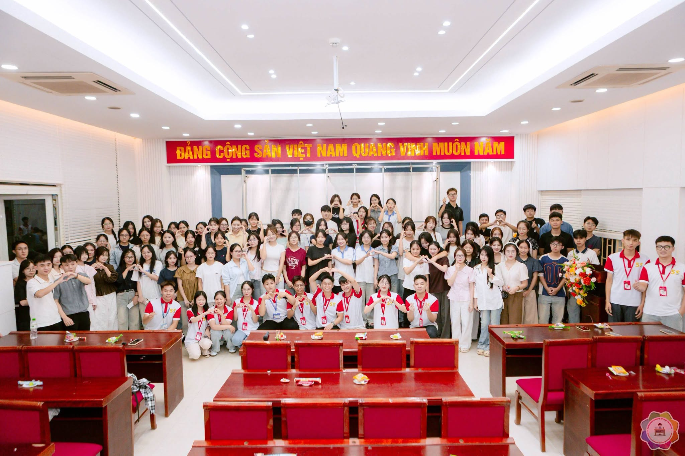
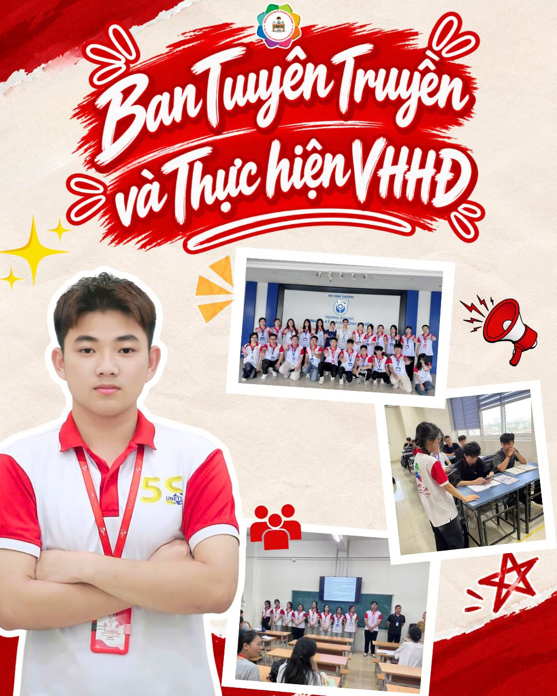
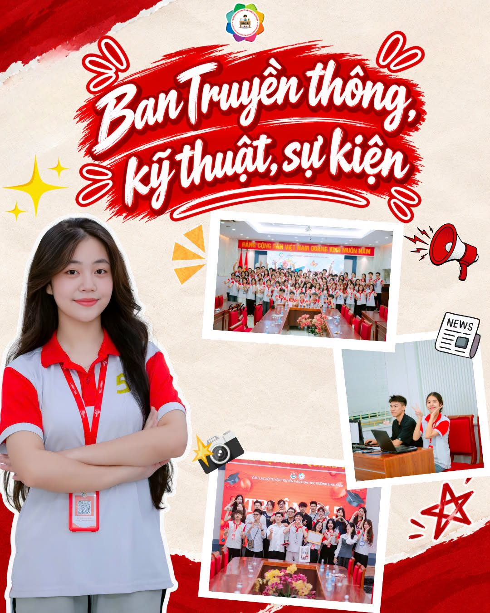
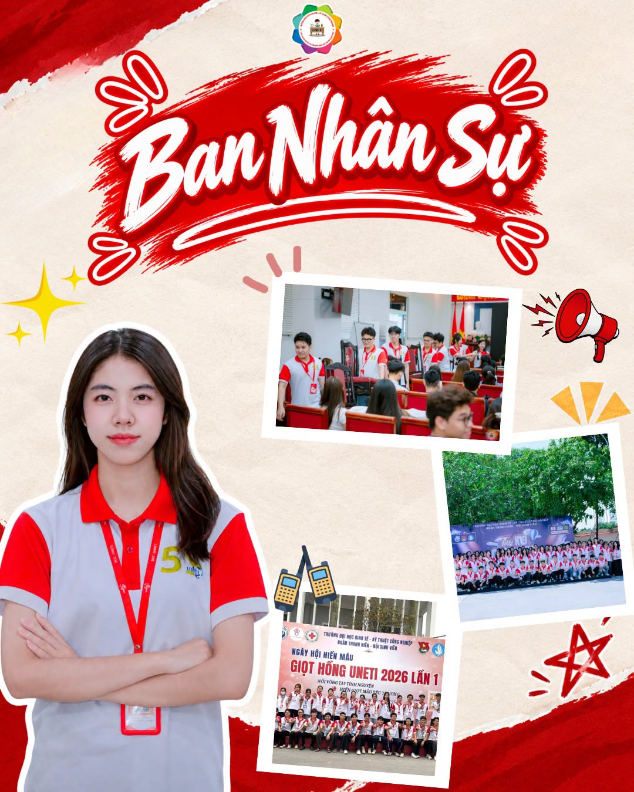
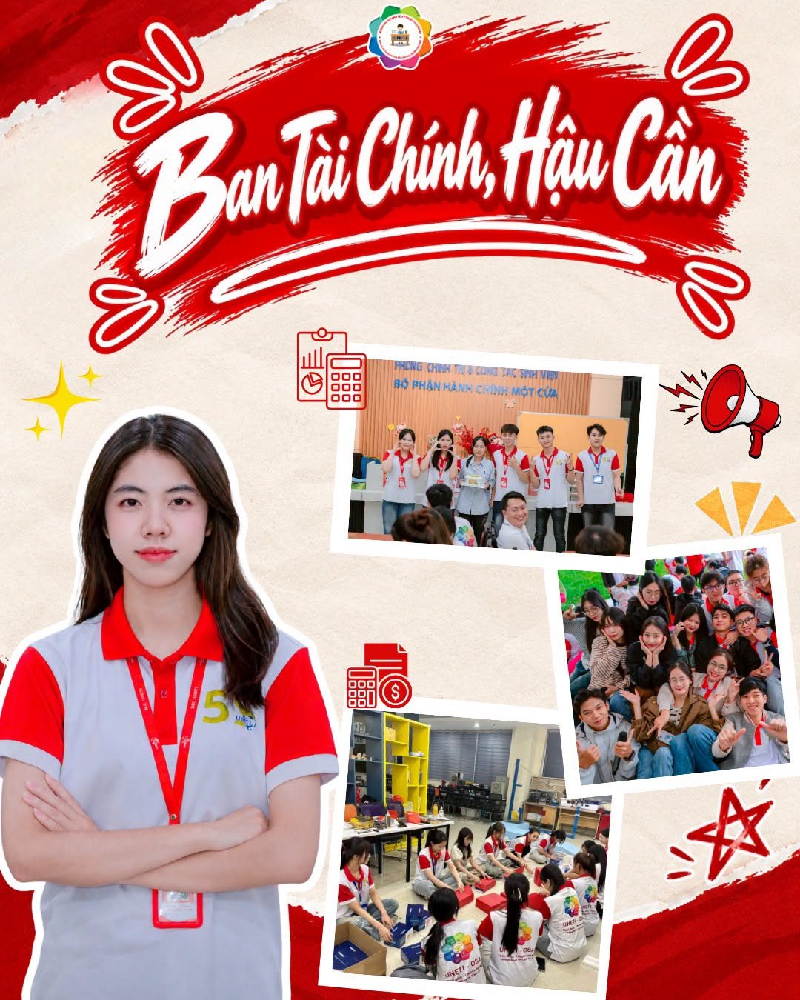
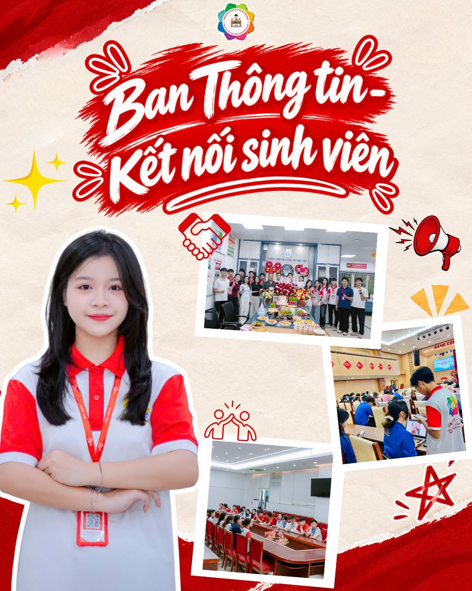
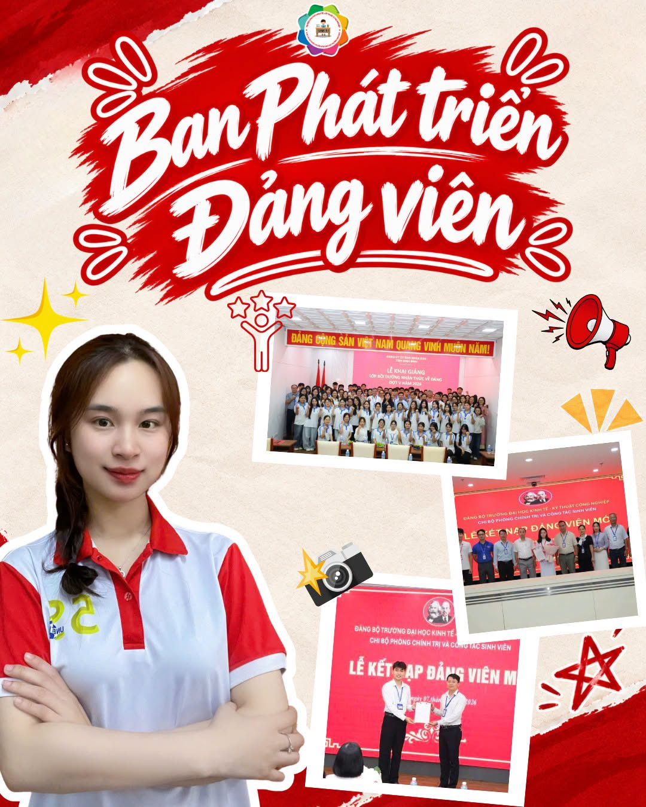

💌 THÔNG BÁO CHÍNH THỨC: KẾT QUẢ VÒNG PHỎNG VẤN GEN 5 ĐÃ CÓ MẶT!
💌 Kết quả vòng phỏng vấn Gen 5 đã có mặt!
🔔 Ting ting! Sau những ngày hồi hộp chờ đợi, kết quả đợt tuyển thành viên Gen 5 của CLB Tuyên truyền Văn hóa Học đường Sinh viên đã chính thức được gửi đến hòm thư của các bạn rồi đây!
👉 Các bạn hãy nhanh chóng đăng nhập vào email cá nhân đã đăng ký để xem kết quả nha.
🚨 Lưu ý cực quan trọng: Email thông báo của SCC có thể nằm trong mục Spam hoặc Quảng cáo. Các bạn nhớ kiểm tra thật kỹ những mục này để chắc chắn không bỏ lỡ thông tin nhé!
❤️ Gia đình SCC xin gửi lời chúc mừng nồng nhiệt nhất đến những mảnh ghép mới đã thể hiện xuất sắc trong vòng phỏng vấn. Chào mừng các bạn đã chính thức bước vào mái nhà S!
📋 Xem danh sách trúng tuyển Gen 5 trên Fanpage CLB
Với những bạn chưa may mắn đi tiếp trong đợt này, đừng vội buồn nhé! Sự nhiệt huyết và tài năng của các bạn đã để lại ấn tượng sâu sắc. Cảm ơn các bạn đã dành tình cảm cho SCC; mong rằng chúng mình vẫn sẽ tiếp tục đồng hành trong những sự kiện sắp tới.
📌 Note nhỏ: Nếu đã tham gia phỏng vấn nhưng vẫn chưa nhận được thư báo kết quả sau khi kiểm tra email, hãy nhắn tin Fanpage CLB để được hỗ trợ kịp thời nha.
✨ Một lần nữa, đại gia đình nhà S hẹn gặp tất cả các bạn tân binh Gen 5 trong thời gian sớm nhất!

🎉 Chào mừng tân binh Gen 5!
Chúc mừng các bạn đã chính thức trở thành một phần của mái nhà SCC. Hẹn gặp tất cả các bạn trong thời gian sớm nhất!
Timeline tuyển thành viên Gen 5
Các mốc thời gian trong đợt tuyển thành viên Gen 5 vừa qua
Mở đơn đăng ký
Chính thức mở đơn tuyển thành viên Gen 5. Các bạn sinh viên quan tâm có thể bắt đầu điền form đăng ký tham gia CLB.
Đóng đơn đăng ký
Hạn cuối nhận đơn đăng ký (23h59 ngày 16/09). Sau mốc thời gian này, CLB sẽ ngừng tiếp nhận đơn tham gia.
Phỏng vấn
Các ứng viên đủ điều kiện đã tham gia phỏng vấn trực tiếp cùng Ban Chủ nhiệm và các Ban chuyên môn vào lúc 18h00 ngày 24/09/2026.
Công bố kết quả
Kết quả vòng phỏng vấn đã được gửi đến email cá nhân mà các bạn đã đăng ký. Hãy kiểm tra cả mục Spam và Quảng cáo.
Giới thiệu các Ban
Tìm hiểu về các Ban chuyên môn và hoạt động tại CLB Tuyên truyền Văn hóa Học đường Sinh viên

Ban Tuyên truyền & Thực hiện VHHĐ
Giữ vai trò định hướng và xây dựng nội dung cốt lõi; chịu trách nhiệm biên soạn thông điệp, khẩu hiệu và các chủ đề giáo dục đạo đức, lối sống văn minh, ý thức cộng đồng cho sinh viên.

Ban Truyền thông - Kỹ thuật - Sự kiện
Đầu mối sản xuất và lan tỏa nội dung trên mạng xã hội; phụ trách thiết kế ấn phẩm, vận hành kỹ thuật (âm thanh, ánh sáng, máy móc) và trực tiếp lên kế hoạch, điều phối các sự kiện của CLB.

Ban Nhân sự
Quản lý và phát triển nguồn nhân lực nội bộ; theo dõi hoạt động, đánh giá thành viên, tổ chức các buổi gắn kết nội bộ và là cầu nối mở rộng mối quan hệ đối ngoại với các tổ chức, đơn vị bạn.

Ban Tài chính - Hậu cần
Bảo đảm nguồn lực và điều kiện vật chất cho mọi hoạt động; chịu trách nhiệm lập dự toán, quản lý thu - chi minh bạch cho CLB.

Ban Thông tin - Kết nối Sinh viên
Cầu nối lắng nghe và khảo sát tâm tư, nguyện vọng, ý kiến của sinh viên về văn hóa học đường; đồng thời tăng cường gắn kết sinh viên, cựu sinh viên với các phong trào, hoạt động của CLB và Nhà trường.

Ban Phát triển Đảng viên
Theo dõi quá trình phấn đấu, rèn luyện của các thành viên; chủ động phát hiện, bồi dưỡng các cá nhân ưu tú có phẩm chất chính trị và đạo đức tốt để giới thiệu cho tổ chức Đoàn - Hội xem xét phát triển Đảng.
📩 Có muốn tham gia CLB SCC?
🌟 Hãy đón chờ đợt đăng ký thành viên tiếp theo của CLB nhé! Mỗi mùa tuyển mới đều mang đến những cơ hội mới để các bạn cùng nhau sáng tạo, gắn kết và lan tỏa những giá trị tốt đẹp của trường đại học.
📣 Đừng bỏ lỡ cơ hội trở thành một phần của mái nhà S trong các đợt tuyển thành viên sắp tới. Hãy sẵn sàng, giữ lửa nhiệt huyết và cùng nhau lan tỏa những giá trị đẹp của CLB!
Theo dõi Fanpage CLB ngay! →